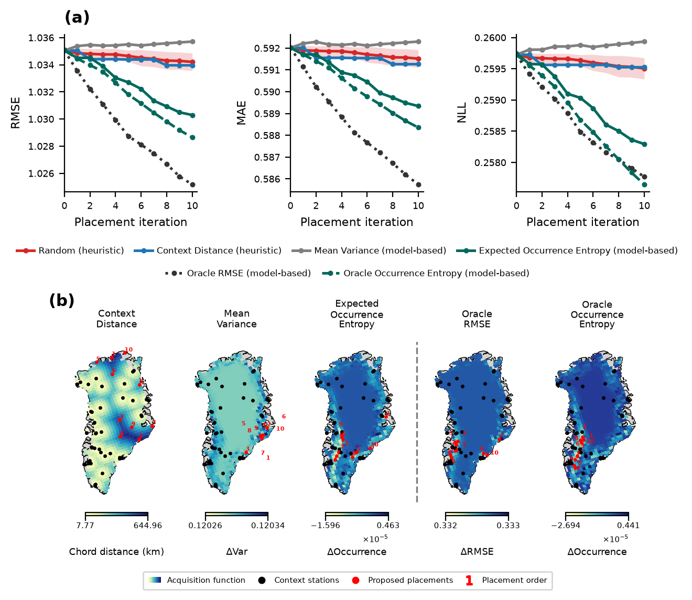

What is an acquisition function?
An acquisition function scores how useful a new sensor would be at each candidate location. The placement search then picks the locations with the best scores:
This greedy search follows
Andersson et al. (2023)1
and uses DeepSensor's GreedyAlgorithm, with the model loaded from a trained
Weights & Biases run.
How do they compare?
We compare acquisition functions by running ten iterations of greedy placement with each and tracking how much every new sensor improves the model's predictions of surface melt. The oracle variants score candidates against the ground truth, so they are not available in practice but give an upper bound on what each strategy could achieve.

- (a) Error over placement iterations: RMSE, MAE and negative log-likelihood after each new sensor. Expected Occurrence Entropy reduces error the most of the practical acquisition functions and tracks its oracle closely, while the Mean Variance baseline and Expected Total Epistemic improve only slightly.
- (b) Where each strategy places sensors: the acquisition function across Greenland, with existing context stations in black and proposed placements in red, numbered in the order they were chosen. The dashed line separates the practical acquisition functions (left) from the oracles (right).